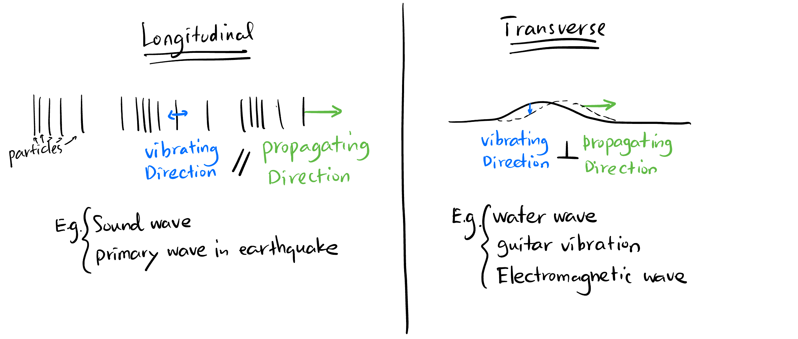
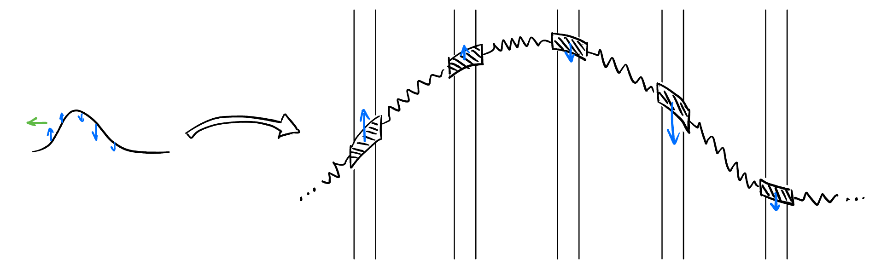
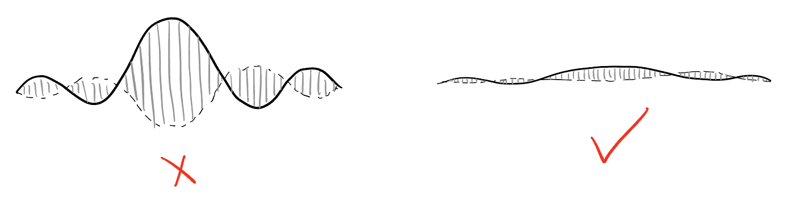
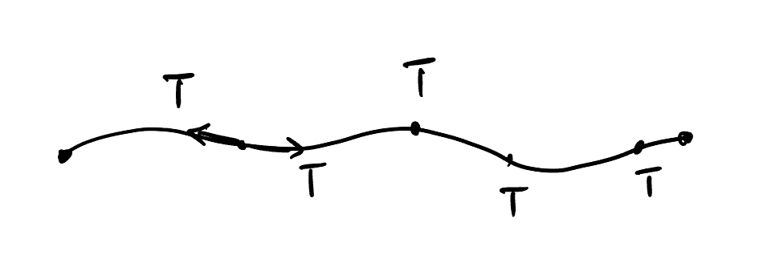
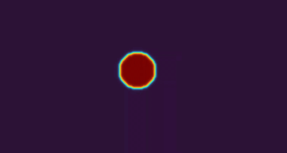
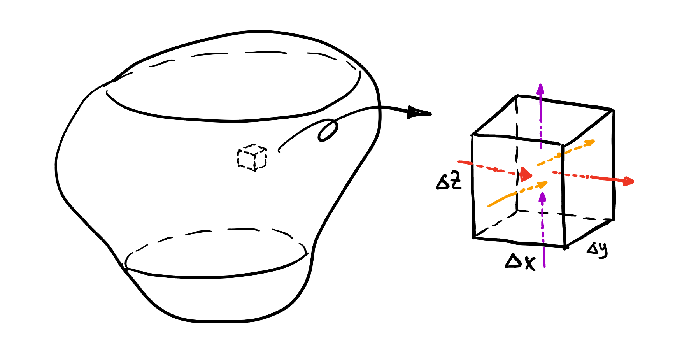

PDE: Wave and Heat Equations Made Obvious 推导波动方程与热传导方程
Takeaways
Conservation law seems underratedly important.
Oscillation and overshooting comes from second order time derivative. Smooth exponential decay comes from first order time derivative.
\(a_{n+1} + a_{n-1} - 2a_n\) is the second order spatial derivative, the mental picture of it is the difference between current value and the average of its two neighbors.
Forcing terms are usually comes with second order spacial derivative. This is because first order spacial derivative only represent force from one side, and second order spacial derivative is the net force of the neighboring particles acting on the particle we analyze.
1 Welcome!
This is the first chapter of my PDE series. You will learn how to derive two of the most important PDEs in physics: Wave equation and heat equation, with nearly no prerequisites. The goal of this article is to make these two equations as obvious as possible1 to you:
1 We avoid using the notation \(\Delta\) for \(\nabla^2\). \(\Delta\) in this article just mean “difference in” blablabla. We also use \(\xi_{t}\) and \(\xi_{tt}\) to represent \(\frac{\partial \xi}{\partial t}\) and \(\frac{\partial^2 \xi}{\partial t^2}\).
- Wave equation: \(\xi_{tt} = c^2 \nabla^2 \xi\).
- Heat equation: \(T_t = \alpha \nabla^2 T\).
Let’s do it!
2 Wave Equation
2.1 1D Wave Equation
There are two kinds of one-dimensional wave: longitudinal and transverse.

They look totally different, but they share exactly the same properties and could be described by the same wave PDE! Let’s have a look at longitudinal wave first.
2.1.1 Longitudinal Wave
This kind of wave can be considered as little balls connected by springs:
As shown in Figure 1, each small ball is in a tranquil state called “equilibrium position” where all resultant force acting on it is zero. Now we want to describe the system when there are perturbations using PDEs. So there should be a variable that depends on time and space. What is that variable? Well, we should define it. Let’s make it the displacement value \(\xi(x,t)\) of each ball from its equilibrium position.
Consider the scenario shown in Figure 2, we zoom in at the \(n\)-th ball. In order to find the equation of motion for this ball, we need to define some parameters:
- \(k\): Microscopic string constant.
- \(m\): Mass of each ball.
The net force acting on the \(n\)-th ball is the sum of the forces from the two adjacent balls: \[ \begin{aligned} F_n &= F_L + F_R \\ &= (-F_0 - k(\xi_n - \xi_{n-1})) + (F_0 + k(\xi_{n+1} - \xi_n)) \\ &= k((\xi_{n+1} - \xi_n) - (\xi_n - \xi_{n-1})), \end{aligned} \] where \(F_0\) is the force from both left and right balls acting on the \(n\)-th ball at equilibrium position (they balanced out at equilibrium position). According to Newton’s second law2 \(F_n = m \ddot \xi_n\), we have: \[ k((\xi_{n+1} - \xi_n) - (\xi_n - \xi_{n-1})) = m \ddot \xi_n. \tag{1}\]
2 \(\ddot \xi_n\) means \(\frac{\partial^2 \xi}{\partial t^2}\) in the article.
Now Equation 1 should be it! But in reality, we do not know \(m\) and \(k\) since they are microscopic parameters. We now define some new parameters to connect the quantities that we can measure with the microscopic parameters:
- \(N\): Total number of balls.
- \(\Delta l\): Microscopic distance between adjacent balls.
- \(L\): Total length, \(L = N \Delta l\).
- \(M\): Total mass of the system, \(M = Nm\).
- \(\rho\): Mass density, \(\rho = \frac{M}{L}\).
- \(K\): Total spring constant3, \(K = \frac{k}{N}\).
3 The spring constant of serial spring is smaller than that of individual spring by a factor of \(N\).
Now Equation 1 becomes: \[ \begin{align*} &k \frac{(\xi_{n+1} - \xi_n) - (\xi_n - \xi_{n-1})}{(\Delta l)^2} = \frac{\rho \ddot \xi_n}{\Delta l} \\ \implies\quad &k \xi_{xx} = \frac{\rho \ddot \xi_n}{\Delta l} \\ \implies\quad &\ddot \xi_n = \frac{k \Delta l}{\rho} \xi_{xx} = \frac{NK \frac{L}{N}}{\frac{M}{L}} \xi_{xx} \\ \implies\quad &\ddot \xi_n = \frac{KL^2}{M} \xi_{xx} \end{align*} \]
\(n\) is arbitrary, so we got: \[ \boxed{ \ddot \xi = \frac{KL^2}{M} \xi_{xx}. } \]
2.1.2 Transverse wave
To derive the wave equation for transverse wave, we need to make some basic assumptions:
Every particle could only move in a fixed line perpendicular to the direction of wave propagation, which means the horizontal resultant force is zero for each particle.
The vibration amplitude is extremely small.
Following above, the tension (density) is constant throughout the string.



Now we define some parameters of the string:
- \(T\): Tension of the string.
- \(\lambda\): Line density of the string (mass per unit length).
We focus on an element of the string shown in Figure 3.
Suppose the mass of that element is \(\Delta m\), the displacement is \(\xi\). The resultant force \[ \begin{align*} & \Sigma F = \Delta m \cdot \ddot{\xi} \\ \implies\quad & T \sin \theta_2 - T \sin \theta_1 = \lambda \frac{\Delta x}{\cos \theta_1} \cdot \ddot{\xi} \end{align*} \]
Since \(\theta_1, \theta_2 \to 0, \cos \theta_1 \approx 1, \sin \theta \approx \tan \theta\), we have: \[ \begin{align*} &T(\tan \theta_2 - \tan \theta_1) = \lambda \Delta x \cdot \ddot{\xi} \\ \implies\quad &T \left( \left. \frac{\partial \xi}{\partial x} \right|_{x+\Delta x} - \left. \frac{\partial \xi}{\partial x} \right|_{x} \right) = \lambda \Delta x \cdot \ddot{\xi} \\ \implies\quad &T \frac{\partial^2 \xi}{\partial x^2} \Delta x = \lambda \Delta x \cdot \ddot{\xi} \\ \implies\quad &\frac{T}{\lambda} \xi_{xx} = \ddot{\xi}. \end{align*} \]
Done! This is the wave equation for transverse wave. We can also see the famous result that the wave speed is the square root of tension divide by density: \[ v = \sqrt{\frac{T}{\lambda}}. \]
In the derivation of the two kinds of waves, the crucial part! is the realization that these two expressions: \[ (\xi_{n+1} - \xi_n) - (\xi_n - \xi_{n-1}) \tag{2}\] and \[ \left. \frac{\partial \xi}{\partial x} \right|_{x+\Delta x} - \left. \frac{\partial \xi}{\partial x} \right|_{x} \] are essentially the second order spatial derivative \(\xi_{xx}\). This is obvious if you recall the definition of second derivative: just the derivative of derivative. Or in discrete version, the difference of difference. In particular, Equation 2 can be also interpreted as the comparison between current value and the average of its two neighbors4: \[ (\xi_{n+1} - \xi_n) - (\xi_n - \xi_{n-1}) \propto \frac{T_{n-1} + T_{n+1}}{2} - T_n. \tag{3}\]
We will encounter this in the derivation of heat equation as well, so keep this in mind!
4 This incredible idea is inspired by this video by 3Blue1Brown.
2.2 2D Wave Equation
You may think the 2D analog is something like Figure 4. However, this kind of wave is vector-valued just like electromagnetic wave, where the “amplitude” \(\mathbf{\xi}: \mathbb{R}^n \times \mathbb{R} \to \mathbb{R}^n\) is a time-dependent vector field. We will focus on scalar-valued waves in this article, leaving vector-valued waves in the future discussion5. In fact, the transverse wave (shown in Figure 5) is quite accurate for 2D scalar-valued waves.
5 For those of the curious reader, the wave equation \(\mathbf{\xi}_{tt} = c^2 \nabla^2 \mathbf{\xi}\) is also true component-wise for vector-valued waves, i.e., \((\mathbf{\xi}_i)_{tt} = c^2 \nabla^2 \mathbf{\xi}_i\).
You can imagine Figure 5 as a curved rubber band with similar assumptions in Section 2.1.2. Suppose:
- \(T\): Tension per unit length6.
- \(\sigma\): Surface mass density of the rubber band (mass per unit area).
6 Note that it doesn’t make sense to say “tension at a point” but “tension at both sides of a line of a given length” (unit: N/m).
Along \(z\) axies, \[ \begin{align*} &\Sigma F = \Delta m \cdot \ddot{\xi} \\ \implies\quad &(T \Delta y) \frac{\partial^2 \xi}{\partial x^2} \Delta x + (T \Delta x) \frac{\partial^2 \xi}{\partial y^2} \Delta y = \sigma (\Delta x \Delta y) \frac{\partial^2 \xi}{\partial t^2} \\ \implies\quad &\frac{T}{\sigma} (\xi_{xx} + \xi_{yy}) = \ddot{\xi}. \end{align*} \]
This can also be generalized to wave equation in \(n\) dimension: \[ \boxed{ \ddot{\xi} = \frac{T}{\sigma} \nabla^2 \xi. } \]
3 Heat Equation
3.1 1D Heat Equation
3.1.1 Modelling
The following physical model of heat conduction on a rod is based on the following assumptions and facts:
No thermal source on the thin rod.
(Prop Relation 1) \(T\) (in Kelvin) is defined to be proportional7 to thermal energy \(Q\) (in \(\text{J}\)), i.e., \[ T : \propto Q. \]
This is reflected in the following well-known fact: \[ \Delta Q = cm \Delta T, \] where \(c\) is the specific heat capacity of the rod, \(m\) is the mass we analyze on.
(Prop Relation 2) Conduction of heat energy is proportional to temperature difference8: \[ \boxed{ q = -k \nabla T,} \] where \(q\) is called heat flux density9, the amount of thermal energy passing through a point (1D case) or a unit area (3D case)
Thermal energy in conserved!
7 Loosely speaking, this is the definition of temperature. If there is no temperature (\(T = 0\text{ K}\)), then there is no particle motion, \(Q = 0\).
8 This famous equation is called Fourier’s law for heat conduction.
9 Since in 1D case, \(q\) is just the amount of thermal energy pssing through a point. Thus in 1D, we often drop the word “density” by just saying “heat flux”.
You may have noticed there are two proportional relations: \[ T : \propto Q. \] This allows us to use temperature to reflect energy! Temperature is more tangible than energy. \[ q = -k \nabla T. \] This connects time derivative and space derivative. So Heat equation is actully easier to derive since this Fourier’s law directly gives us nearly the final result. I say nearly because the only thing left is the conservation of energy!
3.1.2 Derivation
The notations used are defined below:
- \(\lambda\): Line density of the rod (mass per unit length).
- \(x, x + \Delta x\): The coordinates of the start and end points of the rod segment we analyze (Right is the positive direction).
- \(T: \mathbb{R} \times \mathbb{R} \to \mathbb{R}\): Temperature field (time dependent) on the rod.
The quantity we care is obviously how the temperature changes over time and space. We chooce a tiny segment of the rod of length \(\Delta x\) and build equation on it. The temperature on that extremely small segment can be viewed as a constant.
As shown in Figure 6, suppose the left side of the rod is hotter than its right side10. We know that the thermal energy increased in \(\mathrm{d}t\) should equal to thermal energy entering the segment on the left minus thermal energy leaving the segment on the right: \[ \frac{\mathrm{d} Q}{\mathrm{d} t} = q_{\text{in, left}} - q_{\text{out, right}}. \tag{4}\]
10 This is an assumption without loss of generality in terms of writing out the heat equation. The signs can be a lot tricker to determine if you don’t have a certain physical picture.
Now we expect \(q_{\text{in, left}}\) and \(q_{\text{out, right}}\) to be both positive. The gradient of temperature \(\frac{\partial T}{\partial x}\) on position \(x\) and \(x + \Delta x\) are both negative (since temperature decreases along the positive direction), therefore, \[ \begin{aligned} q_{\text{in, left}} &= \left. -k \frac{\partial T}{\partial x} \right|_{x} > 0 \\ q_{\text{out, right}} &= \left. -k \frac{\partial T}{\partial x} \right|_{x + \Delta x} > 0. \end{aligned} \]
Therefore, Equation 4 becomes: \[ \begin{align*} & \frac{\mathrm{d} Q}{\mathrm{d} t} = k (T_x|_{x+\Delta x} - T_x|_{x}) \\ \implies\quad & c (\lambda \Delta x) \frac{\partial T}{\partial t} = k T_{xx} \Delta x \\ \implies\quad & T_t = \frac{k}{c \lambda} T_{xx}. \end{align*} \]
Just this simple, we derived the heat equation! \[ \boxed{ T_t = \frac{k}{c \lambda} T_{xx}.} \]
Why do they both have \(\xi_{xx}\) term?
The “forcing” on a small element is proportional to the change of changes. This is very common in nature.
- In wave case, the force on each particle not depend on the change of displacement of adjacent particles, but the change of the change (because first order determines force on either side, second order determines the net force on the particle we analyze)!
- In heat case, the heat increase in a small segment does not depend on first order derivative of temperature field, that’s just one side. There’s yet another side that may compensate for this change in temperature. So it’s the difference of difference that matters.
Why temperature only cares first order time derivative?
There’s a fundamental difference between wave equation and heat equation: Heat will never overshoot but wave will. In other words, a spring will overshoot its equilibrium with maximal speed, resulting a movement of back and forth. But heat will evolve as smooth and efficient as possible, never oscillating.


A second order derivative in time means overshooting.
Second order time derivative appears in wave equation is because Newton’s second law involves acceleration. Whereas in heat equation the first order time derivative actually comes from conservation laws. There is a wide class of PDEs (called continuity equation) that can be derived from conservation law. We will discuss this later.
Just to give a intuitive understanding of the difference behavior of wave and heat, recall that in Equation 3 we introduced a new way of looking at second order spatial derivative (Difference to the average of its neighbors). As shown in Figure 7, the second order spatial derivative is proportional to the blue \(d\).
The only difference in wave and heat equation is that if \(d\) is proportional to the acceleration \(a\) (of the middle particle), or its velocity \(v\), i.e., \[ \dot{\xi} = \xi \tag{5}\] or \[ \ddot{\xi} = \xi. \tag{6}\]
The solution to Equation 5 is the famous exponential decay, whereas the solution to Equation 6 is obviously the ocsillation!
11 Made with this website where you can explore different PDEs visually!
3.2 3D Heat Equation
Now substitude the rod with a 3D material like metal. Suppose
- \(\rho\): Volume density of the rod (mass per unit volume).
- \(\Delta V\): Volume of the small segment we analyze, \(\Delta V = \Delta x \Delta y \Delta z\).
- \(T: \mathbb{R}^3 \times \mathbb{R} \to \mathbb{R}\): Temperature field (time dependent) on the rod.

From conservation of thermal energy, the increase of \(Q\) is unit time equal to net energy entering the volume from \(x, y, z\) directions. We already know that in one dimension, say \(x\), the net increase in thermal energy is proportional to the second spatial derivative times the nudge length: \[ q = k T_{xx} \overbrace{\Delta x}^{\text{nudge}}. \]
However, \(q\) is three-dimension is the heat flux density, so we also need to multiply the cross section area: \[ \frac{\mathrm{d} Q}{\mathrm{d} t} = q \cdot \Delta \text{Area} = \overbrace{k T_{xx} \Delta x}^{\text{density}} \cdot \overbrace{(\Delta y \Delta z)}^{\text{area size}}. \]
Sum up all heat contributions from three directions: \[ \begin{align*} & \Sigma \frac{\mathrm{d} Q}{\mathrm{d} t} = q_x (\Delta y \Delta z) + q_y (\Delta z \Delta x) + q_z (\Delta x \Delta y) \\ \implies\quad & c (\rho \Delta V) \frac{\partial T}{\partial t} = (k T_{xx} \Delta x)(\Delta y \Delta z) + (k T_{yy} \Delta y)(\Delta z \Delta x) + (k T_{zz} \Delta z)(\Delta x \Delta y) \\ \implies\quad & T_t = \frac{k}{c \rho} (T_{xx} + T_{yy} + T_{zz}), \end{align*} \] i.e., \[ \boxed{ T_t = \frac{k}{c \rho} \nabla^2 T.} \]
This could be natually generalized to \(n\) dimensions.